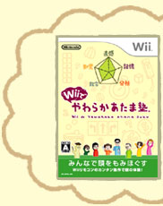
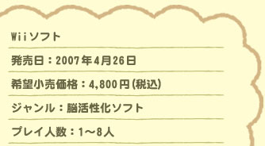
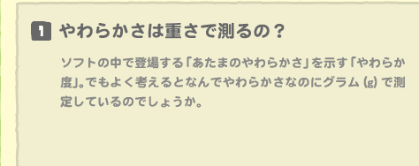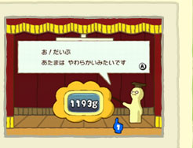
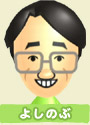
点数やポイントという単位でゲームっぽくしたくなかったのが一番の理由です。
何かいい単位をと考えてきたときに、会議で「人間の脳って平均1,400グラムらしいよ」という話題が出てきて。なら、脳の中で、ソフトによってやわらかくなった部分の重さを「やわらか度」と呼んで、グラムで表示してみようと。うまくハマッたなと思っています。
だんだんやわらかくなっていくと、やわらか度が1,400グラムを超えてしまって実際の脳より重くなっちゃうケースもありますけど。
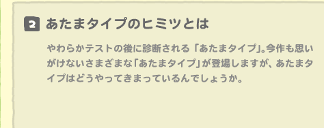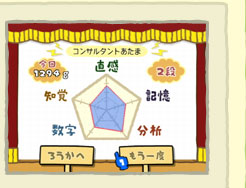
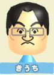
あたまタイプは、やわらか度のグラム数よりも、５つのジャンルのバランスがポイントになっています。テストが終わった後に表示されるあの五角形のグラフがどんな形になっているか、どのジャンルがどのくらい得意・不得意かで判定されるんです。
正解数はそれほど多くないけど、アインシュタインあたまとかになったりもするんです。
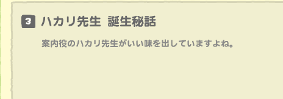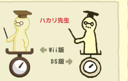
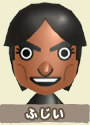
私はＤＳ版の『やわらかあたま塾』ではデザイナーとしても参加していたのですが、当時は、任天堂キャラでありながらも特異なタイプのキャラクターとして世を席捲してやろうと色々と考えまして。最初は、案内役として脳味噌の形をしたアフロヘアの“脳クン”などを描いたのですが、「生々しすぎる」という理由でダメ出しをくらいました（笑）。
そんなときに、ソフトの内容を見たアートワークの担当者が、パッとその場でゆる〜い感じのキャラクターを作ってくれて、それが現在のハカリ先生でした。結果的には、良かったと思っていますよ。
ちなみに、脳のやわらかさを示す「やわらか度」は重さなので、ハカリ先生が乗っている「ハカリ」で測定しようと、そのビジュアルから生まれた仕様です。
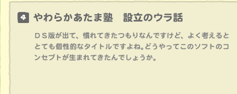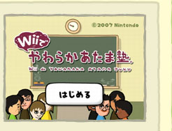
たとえばパズルなどで、子供でもとけてパッと見は簡単そうなのに、実際大人が挑戦してみると意外と苦戦する、そんな問題になんで大人が悩むのかなという疑問がスタートでした。
僕らって、決められた計算とかやり方で解くことには長けているけれども、見たことがない問題を出されると、小さい頃のようにストレートには考えられない。色々な情報が多い社会の中で慣らされてきたせいでしょうね。
それに比べると子供達はまだ色々な知識を身に着けていないぶん発想も自由です。初めて見る問題も柔軟に受け止められる。なら、そこから考えをひっくり返して、こういう問題を大人の方々にも楽しんでもらえば、頭の柔軟性を取り戻せるのではないかと思ったわけです。
勉強というのは基本的に集中することが大切ですよね。机に向かって周囲の雑音を取っ払って問題に挑んでいく。そのやらねばならぬ勉強とゲームが持つ楽しい雰囲気、この相反するものを融合させることで新しいタイプの娯楽が生まれると思いました。楽しさの先にある実益性って、ウケるんじゃないかと。
試作品を作って自分たちで遊んだ時、これは面白い、簡単そうに見えるけど意外と苦戦する、幅広い年齢層にウケそうだと感じました。開発を進めていた頃は社内で『Touch! Generations』が具体的な形になっていない時期で。
確信はなかったけど自信はあったので、発売前には色々と妄想していました。たくさん売れてこういうジャンルが確立されたらいいなとか、社長のスピーチで話題に挙がらないかな、とか（笑）。